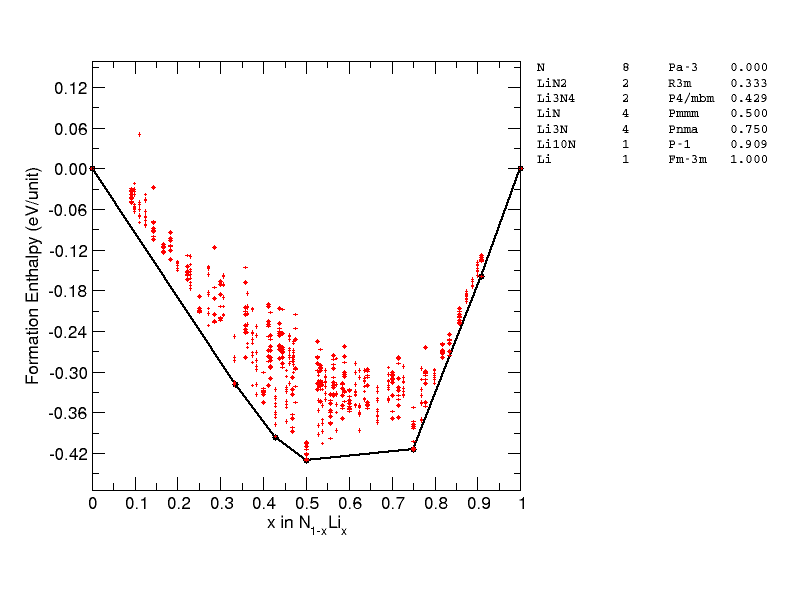

Test CASE - \(\ce{LiN2}\)#
In this example, search for \(\ce{LiN2}\) using DFT and M3GNet.
This hypothetical compound has not been reported experimentally and there is no data in the Materials Project database (as of March 2023).
import os
os.environ["CUDA_VISIBLE_DEVICES"]="-1"
import warnings
from pathlib import Path
from ase.io import read
import ase
import pandas as pd
from tqdm import tqdm
tqdm = lambda x: x
def load_dataset(names):
cells = [read(x) for x in tqdm(names)]
for atoms, name in zip(cells, input_names):
atoms.info['fname'] = name.stem
dataset = []
for atoms in cells:
dataset.append(
{
'atoms': atoms,
'label': atoms.info['fname'],
'energy': atoms.info['energy'],
'energy_per_atom': atoms.info['energy'] / len(atoms),
'volume': atoms.get_volume(),
'volume_per_atom': atoms.get_volume() / len(atoms),
}
)
return pd.DataFrame(dataset).sort_values('energy_per_atom')
Load calculated data from files
input_names = list(Path("lin2/run1/").glob("*.res"))
df_dft = load_dataset(input_names)
input_names = list(Path("lin2/run1-m3gnet/").glob("*.res"))
df_m3g = load_dataset(input_names)
input_names = list(Path("lin2/run1-relaxed-m3gnet").glob("*.res"))
df_m3g_from_relaxed = load_dataset(input_names)
ax = df_m3g.plot.scatter('volume_per_atom', 'energy_per_atom', label='m3gnet')
ax = df_m3g_from_relaxed.plot.scatter('volume_per_atom', 'energy_per_atom', xlim=(9, 20), label='m3gnet-from-dft', ax=ax, color='C1')
ax.set_ylim(df_m3g.energy_per_atom.min() - 0.01, df_m3g.energy_per_atom.min() + 0.1)
ax.legend(loc=1)
<matplotlib.legend.Legend at 0x7f34466be670>
ax = df_dft.plot.scatter('volume_per_atom', 'energy_per_atom',
xlim=(9, 20), ylim=(-434, -433.75),
label='PBE Search')
ax.set_ylim(df_dft.energy_per_atom.min() - 0.01, df_dft.energy_per_atom.min() + 0.1)
ax.legend(loc=1)
<matplotlib.legend.Legend at 0x7f3448286c10>
df_dft.iloc[:10]
| atoms | label | energy | energy_per_atom | volume | volume_per_atom | |
|---|---|---|---|---|---|---|
| 796 | (Atom('Li', [0.464200415515139, 0.806005412907... | LiN2-230326-191233-0e0121 | -2229.09165 | -247.676850 | 90.167346 | 10.018594 |
| 730 | (Atom('Li', [0.8211342071028438, -2.7536178079... | LiN2-230326-180500-a04451 | -1486.05920 | -247.676533 | 59.845918 | 9.974320 |
| 520 | (Atom('Li', [3.6432843142648736, 0.46810773877... | LiN2-230326-200436-4cafc9 | -4458.06073 | -247.670041 | 177.804116 | 9.878006 |
| 407 | (Atom('Li', [-1.5682836465659906, 2.0606335535... | LiN2-230326-160120-ac1474 | -4458.05328 | -247.669627 | 183.389009 | 10.188278 |
| 545 | (Atom('Li', [0.8200227579998184, -2.004455, 1.... | LiN2-230326-195109-76ec78 | -1486.01145 | -247.668575 | 60.607537 | 10.101256 |
| 105 | (Atom('Li', [-0.6487695011556658, 1.3150330382... | LiN2-230326-172214-daf21e | -2972.01323 | -247.667769 | 119.430416 | 9.952535 |
| 672 | (Atom('Li', [-3.589240200334348, -0.6053687311... | LiN2-230326-165501-91a048 | -2229.00526 | -247.667251 | 92.847094 | 10.316344 |
| 107 | (Atom('Li', [1.0164144493500569, -1.2476813873... | LiN2-230326-165849-8e77e6 | -2971.97884 | -247.664903 | 116.887300 | 9.740608 |
| 732 | (Atom('Li', [-1.1885481469229233, 1.5212395811... | LiN2-230326-180331-4c8ad0 | -2971.96242 | -247.663535 | 123.193815 | 10.266151 |
| 792 | (Atom('Li', [-0.07250606256094344, 0.129837491... | LiN2-230326-202717-e1d113 | -2228.97117 | -247.663463 | 91.207478 | 10.134164 |
df_m3g.iloc[:10]
| atoms | label | energy | energy_per_atom | volume | volume_per_atom | |
|---|---|---|---|---|---|---|
| 390 | (Atom('Li', [-0.007339897716549133, -1.9975409... | LiN2-230326-184413-7bd336 | -58.6544 | -6.517156 | 125.633568 | 13.959285 |
| 560 | (Atom('Li', [1.317638279490771, 3.424440606088... | LiN2-230326-194612-54678e | -58.6484 | -6.516489 | 121.377191 | 13.486355 |
| 200 | (Atom('Li', [-0.20008694125554832, -2.50068502... | LiN2-230326-185417-30decd | -58.5923 | -6.510256 | 114.443558 | 12.715951 |
| 442 | (Atom('Li', [4.634037673826224, -0.40509245251... | LiN2-230326-151732-ed7287 | -58.5717 | -6.507967 | 118.316658 | 13.146295 |
| 142 | (Atom('Li', [1.57083654865414, -0.642916648331... | LiN2-230326-191822-1eaa5a | -117.0257 | -6.501428 | 238.977952 | 13.276553 |
| 467 | (Atom('Li', [-0.4490321955307258, -0.052984304... | LiN2-230326-170219-f3310a | -117.0236 | -6.501311 | 237.945619 | 13.219201 |
| 468 | (Atom('Li', [-1.0802750420266825, 1.1103482493... | LiN2-230326-180810-1488c9 | -77.9794 | -6.498283 | 153.091401 | 12.757617 |
| 667 | (Atom('Li', [2.6743746797685137, 2.13634844755... | LiN2-230326-193557-34602e | -58.4642 | -6.496022 | 122.003454 | 13.555939 |
| 237 | (Atom('Li', [3.3948787364474917, -0.6104367234... | LiN2-230326-180157-b8e352 | -58.4599 | -6.495544 | 121.665892 | 13.518432 |
| 664 | (Atom('Li', [1.6415471565807354, 0.68957012671... | LiN2-230326-170249-1247e3 | -77.9296 | -6.494133 | 164.189678 | 13.682473 |
Checking the lowest energy structures, one may find:
M3GNet relaxed structures feature azide ions, while the DFT ones contains the N2 dimers.
M3GNet relaxed structure are generally high in volume compared to the DFT results.
Density of structures distribution#
Again, compare the distribution of the structures.
import matplotlib.pyplot as plt
engs = df_m3g['energy_per_atom'].values.copy()
engs_m3g = engs -engs.min()
engs = df_dft['energy_per_atom'].values.copy()
engs_dft = engs - engs.min()
plt.hist(engs_m3g, bins=100,alpha=0.5,density=True, label='M3GNet', range=(0,0.5));
plt.hist(engs_dft, bins=100, alpha=0.5, density=True, label='PBE + U', range=(0, 0.5))
plt.legend()
<matplotlib.legend.Legend at 0x7f34444d16d0>
It appears that in this case the M3GNet does not reproduce the PES of the DFT well, as the two distributions are vastly different.
It may seem that M3GNet has a high concentration of low energy structure, this is due to the reference energy is taken from the lowest energy structure using the same methodology.
Which approach finds lower energy structure?#
It is not possible to compare the energies directly as the DFT calculations are done with CSATEP+QC5 while the M3GNet is trained on VASP+PBE. Can we trust the DFT energies? To some extended, perhaps, because the QC5 potentials are not designed to be highly transferable but focus on the speed instead.
Here, we re-relax the structures generated from both approaches using CASTEP+C19 at 800 eV and a kpoint spacing of \(0.05 \times 2\pi A^{-1}\). C19 is the default pseudopotential library for CASTEP, which has higher accuracy than the QC5 used for searching, but it requires higher cut off energy..
input_names = list(Path("lin2/refine-run1/good_castep/").glob("*.res"))
df_dft_refine = load_dataset(input_names)
input_names = list(Path("lin2/refine-run1-m3gnet/good_castep/").glob("*.res"))
df_m3g_refine = load_dataset(input_names)
ax = df_dft_refine.plot.scatter('volume_per_atom', 'energy_per_atom', label='CASTEP+QC5->C19')
ax = df_m3g_refine.plot.scatter('volume_per_atom', 'energy_per_atom', xlim=(9, 20), label='M3GNet->C19', ax=ax, color='C1')
ax.set_ylim(df_dft_refine.energy_per_atom.min() - 0.01, df_dft_refine.energy_per_atom.min() + 0.3)
ax.legend(loc=1)
ax.set_ylabel('Energy per atom (eV)')
ax.set_xlabel(r'Volume per atom ($\mathrm{\AA^3}$)')
Text(0.5, 0, 'Volume per atom ($\\mathrm{\\AA^3}$)')
Is this consistent with the literature? Turns out the phase diagram of Li-N has indeed been studied previously:
Shen, Y., Oganov, A., Qian, G. et al. Novel lithium-nitrogen compounds at ambient and high pressures. Sci Rep 5, 14204 (2015). https://doi.org/10.1038/srep14204
Where the same \(\ce{LiN2}\) structure has been reported. These structures are not included in the Materials Project dataset, which probably explains why the model does not do well in the Li-N chemical space.
Next - Machine Learning Potential accelerated search for the Li-N composition space#
Using M3GNet for geometry optimisation would certainly miss the \(\ce{LiN2}\) ground state. This is not surprising because there is no similar structures in the training set.
But can MLPs accelerate AIRSS? A search of Li-N phase space using the recent developed Ephemeral data derived potentials can reproduce the convex hull of Shen et al 2015 above at ambient pressure, but there are also some intriguing new phases found, including \(\ce{Li3N4}\) 🤔🤔.
In this example, the potentials are iteratively built using DFT energies of randomly generated structures. It still at least for now we still need to pay the price of DFT. The training data involves ~ 60k DFT single point energy of small unit cells. This might sound a lot, they are roughly similar to the cost of just 1200 geometry optimisation. The potential built should be able to cover the entire composition space and allow sampling of larger unit cells.
Could one M3GNet make work for the Li-N if these training structures are included in the training? Or perhaps during fine-tuning?
